12 plates. Deterministic overlays rendered by the composition-analysis skill.
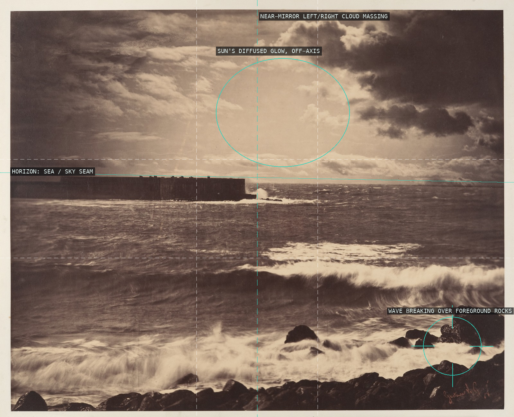
01-great-wave-sete A dead-level horizon gives sea and sky separate tonal registers from Le Gray's combination printing, and the near-mirrored cloud masses are broken only by the sun's glow drifting right of center and the wave crashing over the rocks below.
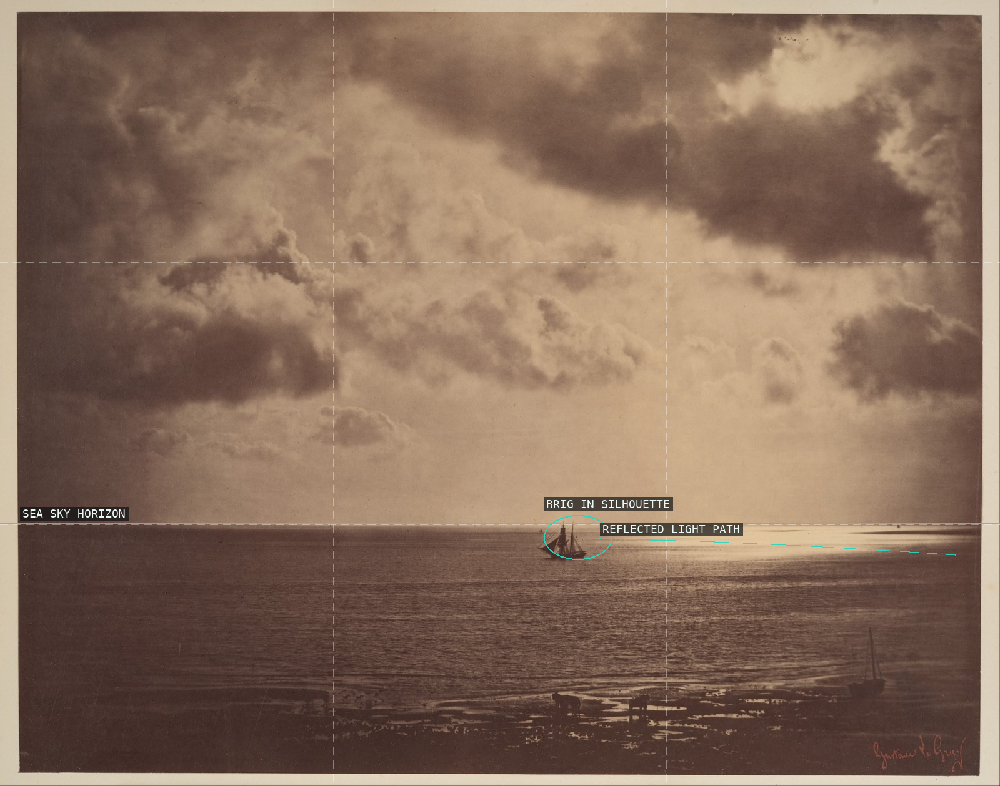
02-brig-on-water A single becalmed brig, reduced to pure silhouette, sits off-center just under a horizon that falls almost exactly on the lower third, isolated by the sea's broad reflected glare.
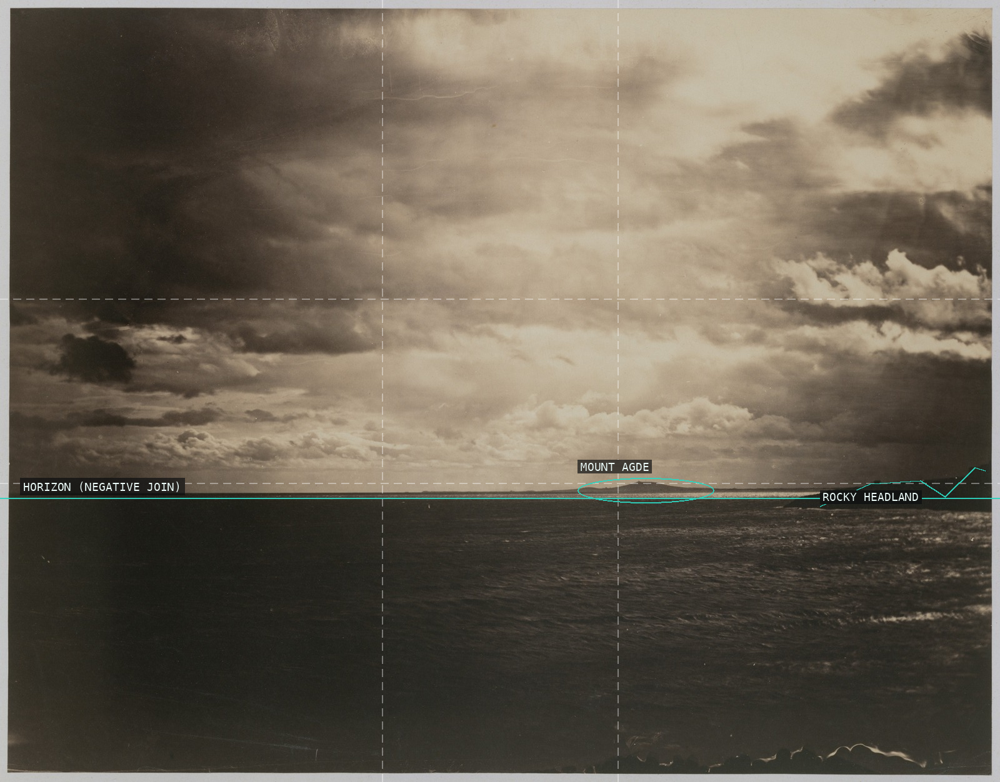
03-mediterranean-mount-agde A dead-level combination-print horizon holds flat sea against flat sky, broken only by Mount Agde's lone silhouette and a nearer headland at the frame's edge.
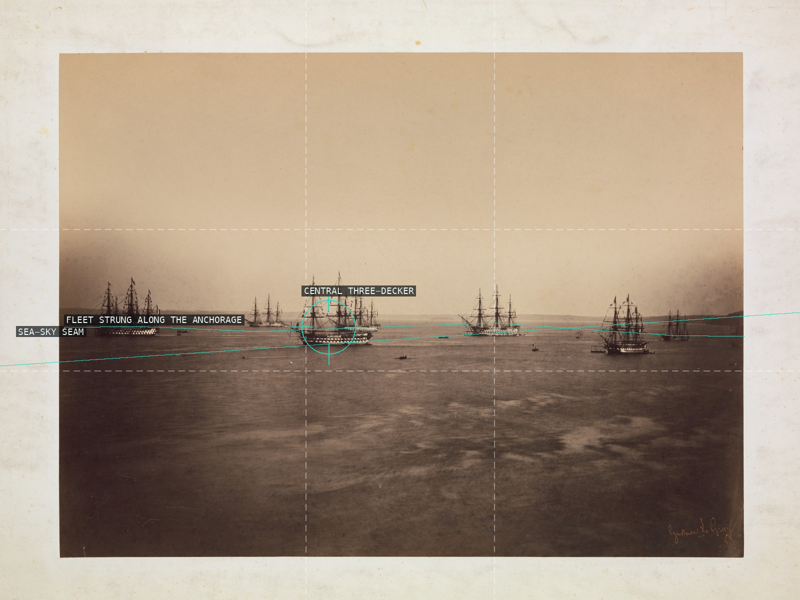
04-french-english-fleets-cherbourg The same sky-and-sea discipline as Le Gray's solo seascapes, scaled up to hold a whole scattered fleet along one uneven horizon band.
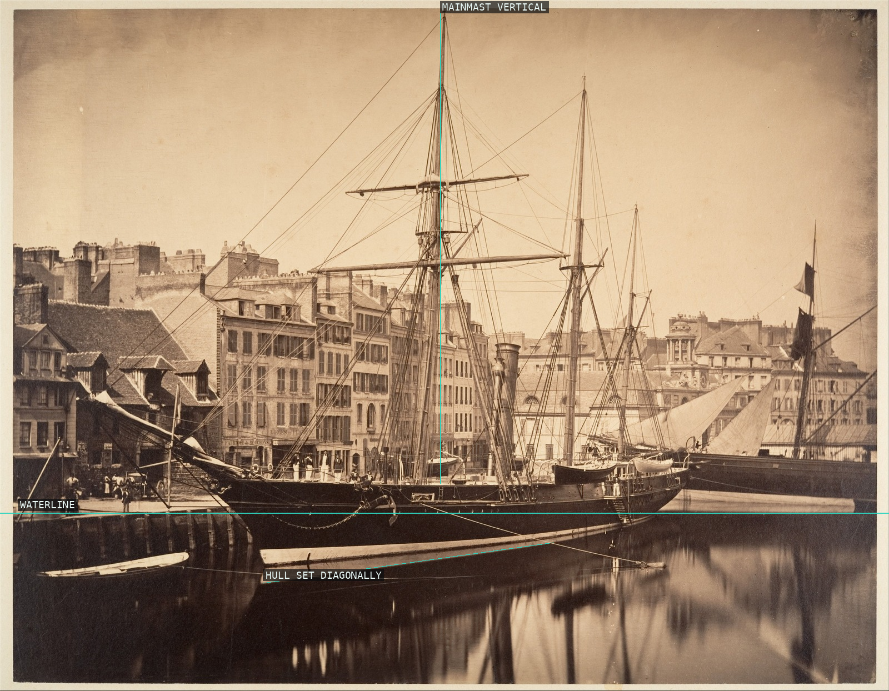
05-reine-hortense-yacht-havre A court commission handled with the same reductive marine geometry as Le Gray's own seascapes: flat waterline, hull set on the diagonal, mast driven straight up against a soft reflected sky.
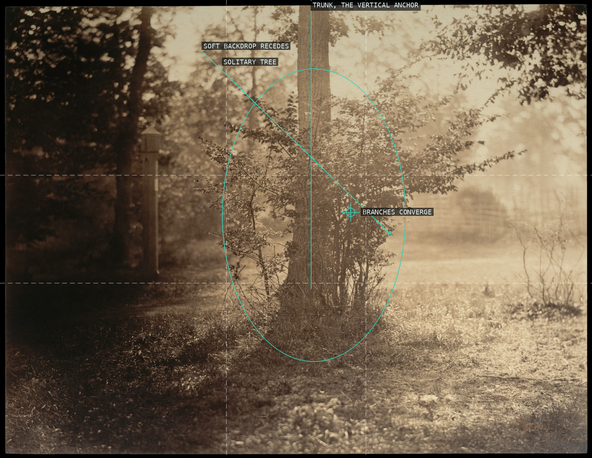
06-tree-study-fontainebleau The tree and its understory stand alone in the frame, ringed by open clearing and haze rather than forest clutter -- figure against void.
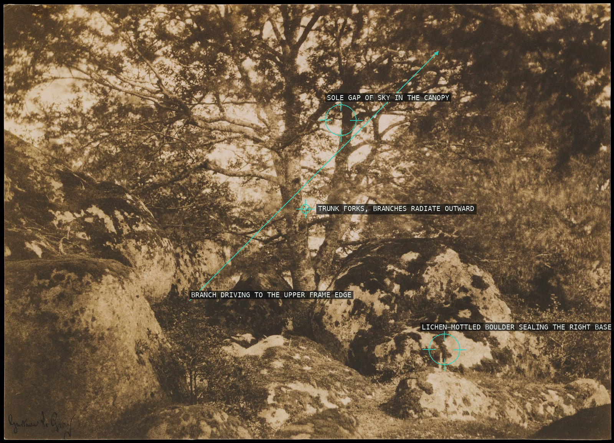
07-oak-tree-rocks-fontainebleau A forked oak radiates branches to every edge while twin boulders seal the base, packing the frame solid edge to edge with barely a gap of sky -- the dense early manner Le Gray later spared down.
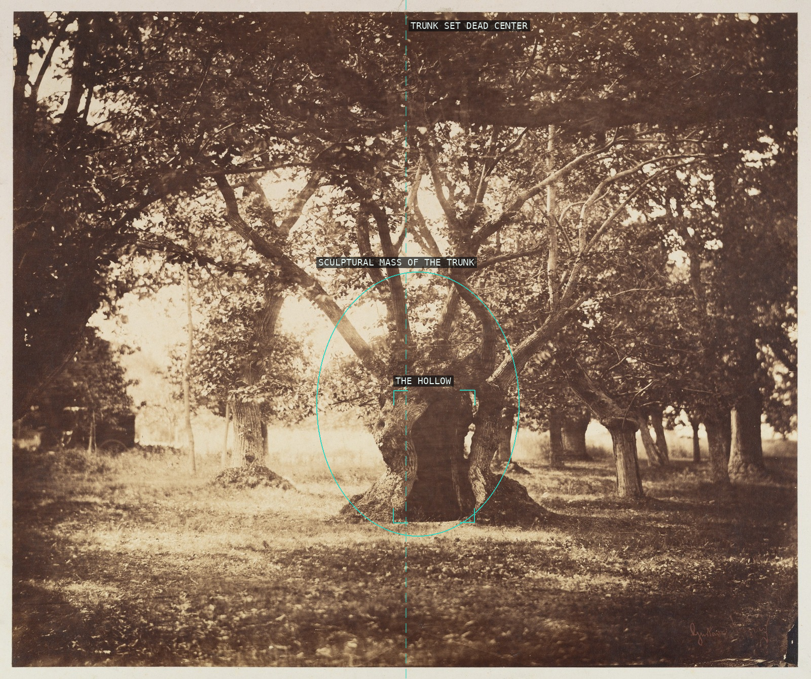
08-hollow-oak-tree-fontainebleau The ancient oak is planted dead center on the vertical axis, its gnarled trunk swelling into a single sculptural mass with the hollow that names it read as a dark aperture at its base.
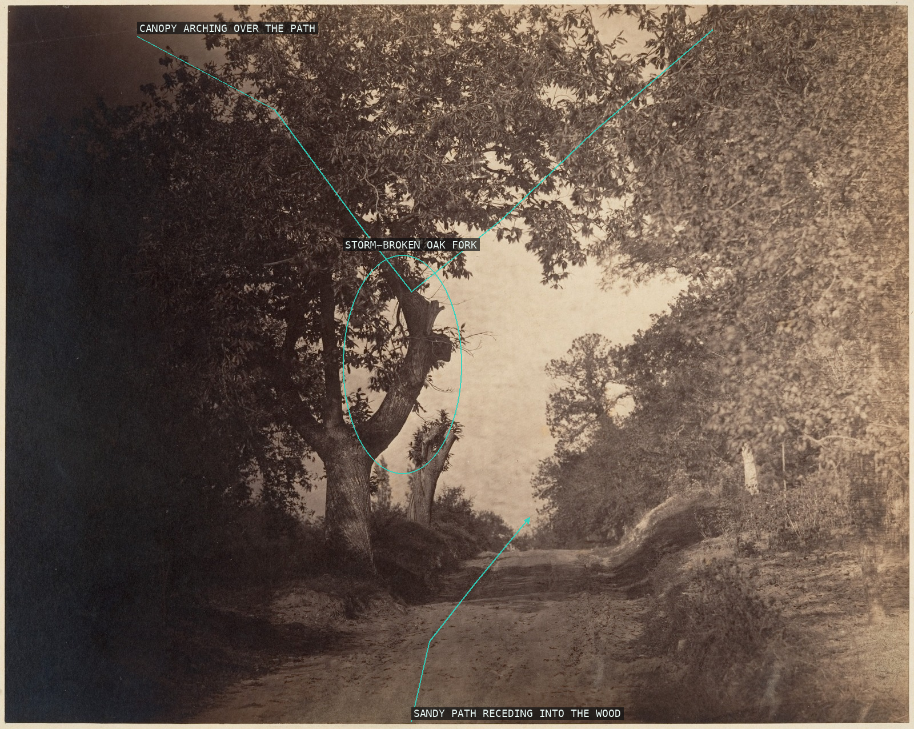
09-fontainebleau-sandy-path The sandy path is a single leading line pulling the eye up and right into the wood, framed on all sides by the arching canopy and the dark oak trunk.
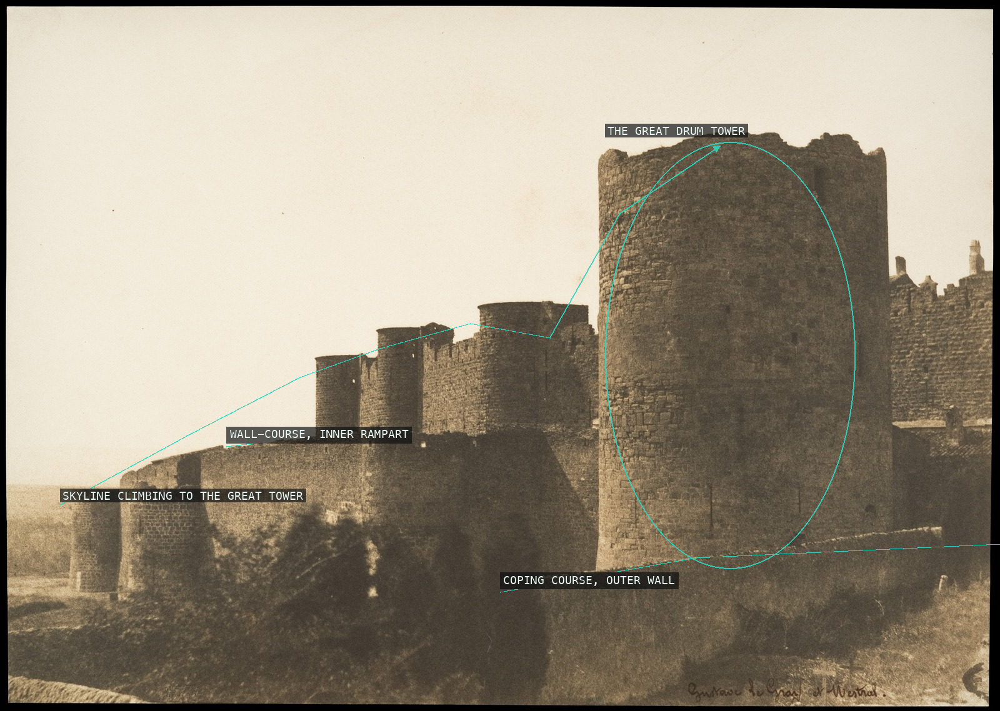
10-ramparts-of-carcassonne The curtain wall is read frontally as stacked horizontal courses of stone, climaxing in the drum tower's rounded mass -- the same planar, banded geometry Le Gray built his seascapes from.
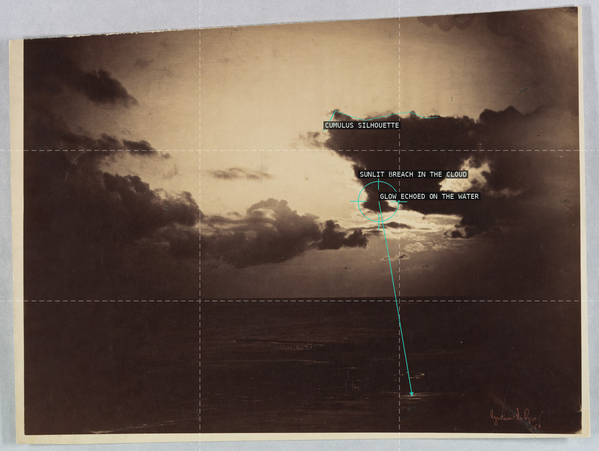
11-cloud-study The cloud's own jagged mass, not the sea below it, is the subject -- its sunlit breach anchors the frame and the light falls straight down to a glint on the water, exactly the raw material Le Gray banked for combination printing.
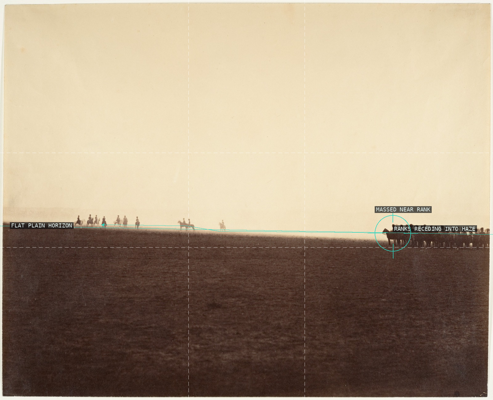
12-cavalry-camp-chalons Depth is built by repetition and diminishing scale of cavalry ranks strung along the horizon, not by a still horizon itself.